1942—Modern Pattern Design
by Harriet Pepin
Chapter 12—Children's Clothing
At the time of this writing, there has been no established rule for sizing children's and infants' garments. One manufacturer may produce a size number 6 garment which will prove to be somewhat larger than a similarly marked garment made by some other manufacturer. The mother must go into the store and purchase the garments according to the actual size of her child because some age 8 children will wear size number 6 apparel and again the opposite may be quite true.
As is the case with adults, a government sponsored survey was started and through the aid of the schools, measurements were to be taken of thousands of children of varying ages and sizes in an attempt to determine the measurements of an average child of certain age. This may aid in standardizing measurements as far as the manufacturing is concerned, but still the mother will have to purchase her daughter's clothing according to her actual size rather than her age.
For one who contemplates entering this specialized field, it is a wise plan to make a careful study of the garments which are now being designed and shown in the stores. This can easily be accomplished by actually selling the merchandise in a children's and infants' department in any city. Customers soon voice objections to certain types of the apparel and in some cases, the small customer expresses her objection to certain points about the clothing while trying it on. Hundreds of clippings of good examples of functionally designed clothing for youngsters will do much to aid in visualizing shortcomings and may aid in stimulating ideas.
A few days spent at the lake shore during a week in summer gives excellent opportunity for the study of varying shapes and sizes of growing children from toddlers up. The designer should know her little customers before attempting to create apparel for them.
Children's and adolescents' clothing closely follows the trends shown in adult apparel. For the past several years "mother and daughter" dresses have been successfully sold in stores. Costume history books show us illustrations of small children dressed much like their parents. Fortunately, modern mothers are more sensible and they favor simple, well-cut clothing for their children and much of the fussiness of former years has been replaced with functional design of a high order. Yet these small folks want some interest in their clothing and clever designers cater to the interests of that age when they plan their designs and patterns.
Apparel for growing children may be classified roughly into three groups: infants', children's and girls'. The infants' clothing extends to about two years. The children's from two to eight years and the girls' from eight to sixteen. Boys' clothing would run about the same as girls'.
It is to be remembered that these do not represent sizes, but ages. Hence, the girl's sixteen dress would not be confused with the misses' size sixteen found in another department of a store. The girl's size sixteen is designed to meet the needs of a young growing girl, to appeal to her taste and to fit her undeveloped figure. It is merely an enlarged size eight or ten.
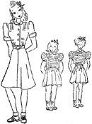As girls vary greatly from age eight to sixteen, when the growing girl reaches the size and contour which makes it impossible to purchase her clothing in the children's department, she will then go to the "junior" department and probably find that a size thirteen or fifteen will fit her.
In some cities, custom designers for growing girls and small children build successful following in business. Between the ages of ten and sixteen, many adolescent girls develop figures of disappointing proportions and the wise mother realizes the importance of properly designed clothing for her daughter at that age.
Analysis of Children's Figures
Because the small child from two to eight years of age has a tendency to have a bulge at the waistline instead of at the bust level, the control for this curve must be placed at the waistline. The back of the figure is flat through the shoulders and otherwise quite normal. Therefore the draft for the back sloper would appear quite similar to that which would be made for an adult.
When you have completed your draft for size four, you may notice that the shoulders have an excessive slope as compared to the adult draft. This is caused by the posture of the small child. The number 9 measurement increases in the girls' measurements which will bring the pitch of the shoulder upward slightly.
How to Take Measurements Correctly
Turn back to your previous instructions on basic measurements and read over the information once more. Check the adult measurement chart and the children's. Note the similarity in points of measurement. Note that there is no need for a Bust Point Height or Bust Point Width in children's sloper drafts but it is necessary to use these measurements in the "junior" sizes.
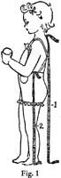Fig. 1 illustrates the method for determining the Full Length for a child's draft. The same measurement is used when making the front bodice draft. You will also note method shown for taking trouser side length. This could also be considered as a skirt length, when needed. Your Center Bodice Length added to your Trouser Side Length given in the measurement chart would give you Full Length in the standard sizes given in your chart. Skirt lengths vary for any given size and many manufacturers finish the skirt lengths in single sizes at a variety of lengths in just the same way hosiery is finished in a variety of leg lengths for a single foot size. In all cases, hems are generous to provide ample material for alterations.
Fig. 2 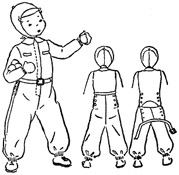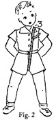 a "trunk measurement" which is taken when garments such as snow-suits, full length one-piece sleeping garments, or "creepers" are being made. This is merely used as a checking measurement to make certain that the crotch depth is ample to give room for sitting. Separate trousers or panties will pull down at the waist, but the full length garments must be cut with an extra low crotch to provide ample "trunk" room.
The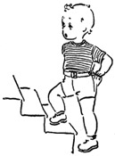 Hip Level is more or less standard at 7 inches for adults, except in extra large sizes when it may be dropped to 8 or 9 inches. Due to the changing heights of children, it is established at 4 inches below the waistline for size 2 and increases one-half inch with each size until it reaches 7 inches.
As the armscyes in children's garments should be roomy, when taking measurements directly from an individual, take the Side Bodice Length about 2 inches below the armpit to produce a generous armscye. You will remember that in the adult's clothing we try to fit the sloper closely at that point.
Necklines are usually made somewhat looser than for the adult so this measurement should be taken generously when measuring an individual child.
Although the designer strives for a certain amount of style and fit in the child's garment, her first thought must be for the comfort of the wearer. Common sense must be employed when fitting the little sloper and when using it to produce new designs. The sloper becomes a measurement guide, particularly through the shoulder, neck and sleeve areas.
| Bodice Measurements | Front | Back | Front | Back | Front | Back | |||||||
| Size 2 | Size 4 | Size 2 | Size 4 | Size 8 | Size 10 | Size 8 | Size 10 | Size 11 | Size 13 | Size 11 | Size 13 | ||
| 1 | Center bodice length | 9 1/2 | 10 1/4 | 9 1/2 | 10 1/4 | 12 1/2 | 13 1/4 | 12 1/2 | 13 1/4 | 12 | 12 1/2 | 13 | 13 1/2 |
| 2 | Full bodice length | 11 1/2 | 12 1/4 | 10 1/4 | 11 | 14 1/2 | 15 1/4 | 13 1/4 | 14 | 14 1/2 | 15 | 13 3/4 | 14 1/2 |
| 3 | Across measurement | 9 | 9 1/2 | 10 | 10 1/2 | 11 | 11 1/2 | 12 | 12 1/2 | 11 3/4 | 12 1/4 | 12 | 12 1/2 |
| 4 | Shoulder point width | 10 | 10 1/2 | 10 1/2 | 11 | 12 | 12 1/2 | 12 1/2 | 13 | 12 1/2 | 13 | 12 3/4 | 13 1/4 |
| 5 | Full bodice width | 13 1/2 | 14 1/4 | 12 3/4 | 13 1/2 | 16 1/2 | 17 1/4 | 15 3/4 | 16 1/2 | 16 1/2 | 17 1/4 | 16 | 16 3/4 |
| 6 | Shoulder pitch | 10 3/4 | 11 5/8 | 10 | 10 7/8 | 14 1/8 | 15 1/4 | 13 | 14 | 14 1/2 | 15 | 13 1/2 | 14 |
| 7 | Shoulder width | 3 1/2 | 3 5/8 | 3 1/2 | 3 5/8 | 4 | 4 1/8 | 4 | 4 1/8 | 4 1/4 | 4 3/8 | 4 1/4 | 4 3/8 |
| 8 | Neck measurement | 5 3/4 | 6 | 4 1/8 | 4 3/8 | 6 3/4 | 7 | 5 1/8 | 5 3/8 | 7 1/2 | 7 3/4 | 5 1/2 | 5 3/4 |
| 9 | Shoulder height | 9 1/4 | 10 | 8 3/4 | 9 3/4 | 12 1/4 | 13 1/4 | 11 3/4 | 12 5/8 | 11 3/4 | 12 1/4 | 12 1/4 | 12 3/4 |
| 10 | Side bodice length | 4 | 4 1/2 | 4 | 4 1/2 | 6 | 6 3/4 | 6 | 6 3/4 | 5 3/4 | 6 | 5 3/4 | 6 |
| 11 | Waist measurement | 11 3/4 | 12 1/2 | 10 | 10 3/4 | 14 3/4 | 15 1/2 | 13 | 13 3/4 | 13 1/2 | 14 1/4 | 13 | 13 3/4 |
| 12 | Hip measurement | 14 | 14 3/4 | 12 3/4 | 13 1/2 | 17 | 17 3/4 | 15 3/4 | 16 1/2 | 17 | 17 3/4 | 17 1/2 | 18 1/4 |
| Full length | 25 | 28 | 40 | 44 | |||||||||
| Sleeves | |||||||||||||
| Overarm length | 11 | 12 1/2 | 17 | 18 5/8 | 20 | 20 3/4 | |||||||
| Underarm length | 7 | 8 1/4 | 12 | 13 1/4 | 15 | 15 1/2 | |||||||
| Biceps measurement | 9 5/8 | 10 | 11 1/8 | 11 1/2 | 12 | 12 1/4 | |||||||
| Wrist measurement | 5 7/8 | 6 | 6 3/8 | 6 1/2 | 6 1/4 | 6 3/8 | |||||||
| Trousers | |||||||||||||
| Crotch depth | 8 3/4 | 9 | 9 3/4 | 10 | 10 1/2 | 10 3/4 | |||||||
| Thigh circumference | 13 | 14 | 17 3/4 | 18 1/4 | 19 | 19 3/4 | |||||||
| Side length | 17 | 20 | 30 | 32 | 39 | 41 | |||||||
| Bust point height | |||||||||||||
| front | 6 1/8 | 6 3/8 | |||||||||||
| back | 6 1/8 | 6 3/8 | |||||||||||
| Bust point width | |||||||||||||
| front | 6 3/4 | 7 1/8 | |||||||||||
| back | 5 1/4 | 5 5/8 | |||||||||||
Children's, Girls', Juniors' Measurement Chart
Measurements for larger sizes in each of the following groups may be secured by adding the same gradation which is shown between the two sizes given in any one of the following groups. That is, there is 3/4 inch added to Center Bodice Length for size 2 to make size 4.
Add 3/4 inch to that measurement given for size 4 and you have the measurement for size 6 etc.
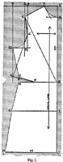Drafting the Child's Front Sloper
To draft the child's front sloper, follow the instructions given for drafting the adult front bodice as shown on page 60. Proceed as far as and including 10-D. From that point, follow the instructions given below:
B-E-9—Square a guide line left from point B on line A-B. Locate point E half way between lines A-B and the guide line #5. Connect E with point #9.
F-9—Measure the line B-E-9. Subtract one half Front Waist Measurement from this sum. Locate point F from point #9 a distance equal to that difference.
F-10—Connect point F with point #10.
G—10-G equals 10-9 in length. Label point G. Connect point G with point E.
H is squared from B to equal one half Waist Measurement.
I—Extend line 2-B downward a distance equal to Hip Level for draft size being made. Label point I.
J—Extend center front line B-I to desired skirt length. Label point J. (Equal to A-B plus 2 inches.)
K—Square a line from point I equal to one half the Front Hip Measurement. Label point K.
L—Square a line from point J equal to I-K plus one inch. Mark L. Connect points H-K-L.
M—Locate point M half way between L and J. Label M.
N—Make K-N equal to I-J in length. Label point N. Connect point N with point M.
Establish vertical grain indicator parallel to the center front line A-J.
Establish neckline and armscye curves as for the adult draft. With blue pencil trace out final pattern as is shown by white area in Fig. 1.
NOTE: The dart G-E-H produces the bulge through the waistline area E-B. Later in this text examples are given showing how this dart may be shifted to produce various cuts. As most small children's garments are cut from a few basic patterns, there is little occasion for any complicated shifting of this basic control. The point to keep in mind is the contour of the child's body, endeavoring to hide any defects. This may be accomplished by developing a limited number of well-shaped patterns. Any further design interest is then introduced through variation of fabrics, colors and trimming. When designing patterns which involve divisional lines, it is highly important that care be taken in establishing good proportions. Yokes, collar and cuff widths, braid trimmings and the size of design motifs in fabrics should be proportioned to the small garment.
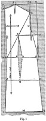Drafting the Child's Back Sloper
To draft the child's back sloper, follow instructions given previously for drafting the adult back bodice (see page 63). Proceed as far as and including step 9-10. From that point, follow instructions given below. (See NOTE on page 243.)
D—Square a line left from point # 10 to intersect with line B-6. Mark this point D. It locates point of dart.
E—Square a line right from point B equal to distance that point D is from line A-B minus one-half inch. Label E.
Connect points B-E-9 and measure that line B-E-9. Subtract one-half Back Waist Measurement from this sum.
F—Locate point F from point #9 a distance equal to one third of that difference. Connect F and point # 10.
G—Locate point G from point E a distance equal to the remaining two thirds. Connect E and G with point D.
H—From point B on the line A-B, square a line left for 3/8 inch (use this in all children's sizes) and mark point H. Connect points A and H.
I—Extend the line A-H downward to desired skirt length. (Same amount used for the front.) Label point I. Connect points B and I.
J—On line B-I, from point B, measure downward a distance equal to Hip Level and label point J.
K—From line H-I, square guide line to pass through J. From point J, on the guide line, measure off a distance equal to one-half Back Hip Measurement. Label point K.
L—From point I, on line H-I, square a line to the right which is equal to line J-K plus one inch. Label point L. Connect points F-K-L.
M—Locate this point half-way between points I and L.
N—Make K-N equal to the line J-I. Connect N and M.
O—Locate point O a distance from point J equal to line B-E plus one-half inch. Connect point O with points E and G.
Establish the grain indicators parallel to the line A-I. Establish neckline and armscye curves in same manner as for adult block. With blue pencil trace out the pattern as is shown by white area in Fig. 1.
NOTE: Frequently, individual children's measurements will produce no space between points 7 and 8. Usually children have rather straight, flat backs and the shoulder blades do not become very prominent until the child reaches the age of eight or ten.
Drafting the Child's Sleeve Sloper
To produce a draft for a child's sleeve sloper, the same method would be used as that used to produce a similar pattern for an adult. Use the measurements given for children appearing in the chart on page 240. (See page 91.)
Adaptations of Children's Pattern Designs
In order that you may study the functional characteristics commonly found in children's apparel, it would be advisable for the student to study fashion magazines and to clip and classify many examples of garments. These may be separated into types of garments, such as sleeping apparel, dresses and coats. These groups may then be sorted according to cut, such as yokes, styles, bodice and skirt dresses and those which provide the shaping through vertical seams. The latter would be largely princess types. The following diagrams illustrate representative types of these three classifications.
Aside from the careful selection of suitable fabrics, colors and trim, the designer of children's apparel works very much as the designer for adult apparel. A close understanding of the habits and preferences of the small child is essential to creation of original designs which will have an immediate appeal to the child and to the mother.
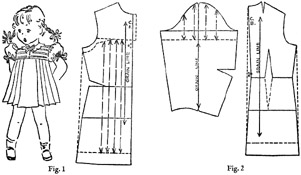Fullness Under Yoke
The straight full dress, attached to a yoke is a popular cut for the small girl. It looks well on the chubby tot and also on the thin body. Note the tiny puffed sleeves, the little flat scalloped collar and the use of bows as a trimming.
The dart, which produces extra length in the front of the garment is moved up under the yoke. The straight side seam removes the fit provided in the sloper. Extra fullness is provided in the front by slashing. Pleats, gathers or smocking could be used. A similar amount of fullness could also appear in the back section. Puffed sleeve is produced in the same manner as for an adult. Note short length of sleeve.
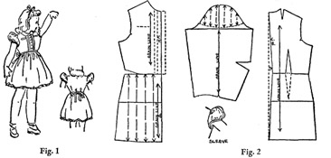Combination Fitting
This little dress has a seamed waistline in the front with a straight back which is adjusted to the figure by means of a sash. As long as the garment opens at the front, one might add a simple inverted pleat at the center back which would give additional sweep to the back of the skirt. The extra fullness held by the band across the front hides the curve of the body and at the same time produces a pinafore effect which is youthful and charming on her little plump figure.
Note method for cutting this sleeve which is merely a "cap." The lower edge of the sleeve and the armscye are finished with a binding put on in one operation.
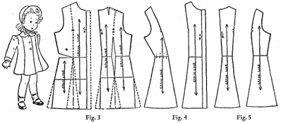Vertical Fitting
Fig. 3 shows method for producing the pattern, which is simple. Note how the waistline dart is folded out, and divisional seam line placed to fall on point of basic dart. Flat collar would be cut from basic sloper in usual manner. Note position of grain indicator in front side section (Fig. 4). The two back sections (Fig. 5) closely resemble adult's pattern. Degree of waistline fitting may be reduced if wished. Normal seam allowances, generous hem should be added. Note darted sleeve in sketch, as for an adult.
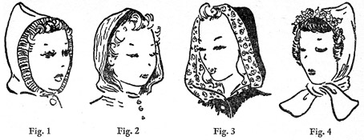HOOD
The detachable or attached hoods have proved so practical for outdoor sports, they are added to many such garments designed for adults as well as children. The following diagrams show the method used for producing such a pattern. When the muslin has been made, a close fit may be added wherever desired. It is well to remember, however that it must be loose enough to be worn over another head covering and it must also provide enough freedom to move the head.
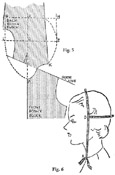Arrange back and front bodice slopers against' guide line as is shown in Fig. 5.
The line A-B is an extension of center front bodice.
See Fig. 6 for method for taking measurements.
AB- measurement taken from base of throat to center top of head plus one inch.
D- is eye level.
DF- Depth of back of head and is squared from AB.
DE- desired amount to extend beyond edge of face and is also squared from point D.
B-G equals DE and is squared from point B. B-H equals DF and is squared from point B.
Draw shape of the back of the hood as desired— square, curved or pointed. As point F is a measurement point denoting required depth for size of head, line D-F should not be shortened in this shaping process.
If hood is to start from V-shaped neckline as shown in Fig. 3, the measurement A-B should be taken from the point of the neckline. Normal neckline A-K shown in diagram is used for most hood designs. Front edge G-E-A may be shaped as desired. A draw-string or elastic can be used about the face or a contrasting shaped cuff facing shown in Figs. 1 and 3.